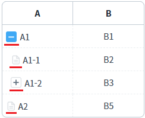
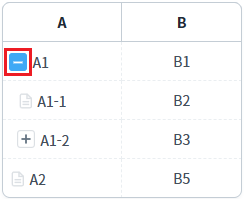
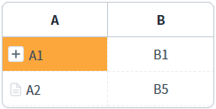
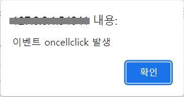
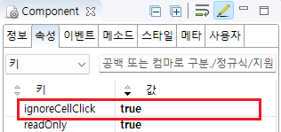

GridView의 'ignoreCellClick' 속성의 설정을 비교한 예제입니다. 이 속성을 통해 바디 컬럼의 'inputType'이 'drilldown'으로 설정된 컬럼에서 왼쪽에 표시된 노드 유형 아이콘이 클릭될 때 'oncellclick' 이벤트의 발생 여부를 설정할 수 있습니다.
속성의 설정 값에 따른 동작은 다음과 같습니다.
true : GridView의 'oncellclick' 이벤트가 발생하지 않음.
false : (기본 설정) GridView의 'oncellclick' 이벤트가 발생함.
GridView의 'ignoreCellClick' 속성에 설정된 값과는 무관하게, 컬럼의 'inputType' 속성이 'drilldown'인 컬럼에 출력된 문자열을 클릭한 경우에는 'oncellclick' 이벤트가 발생됩니다.
셀의 '노드 유형' 아이콘 클릭 시 'oncellclick' 이벤트가 미발생
셀의 '노드 유형' 아이콘 클릭 시 'oncellclick' 이벤트가 발생
예제 영역 "'노드 유형' 아이콘을 클릭하면 'oncellclick' 이벤트 미발생"에 구성된 GridView에서 테스트합니다.GridView에는 'oncellclick' 이벤트 핸들러가 설정되어 있습니다. 셀을 클릭하면 핸들러에서 브라우저 'alert'으로 'oncellclick 이벤트 발생'이 표시됩니다.
1
STEP 1: 초기 상태를 확인합니다.
GridView의 'A' 컬럼의 'inputType' 속성이 'drilldown'으로 설정되어 있습니다. 셀 문자열 왼쪽에 '노드 유형' 아이콘이 표시됩니다.
Image 1.브라우저(Chrome) 실행 예시

2
STEP 2: '노드 유형' 아이콘 클릭하기
'drilldown' 컬럼에 표시된 아이콘을 클릭합니다.
Image 2.브라우저(Chrome) 실행 예시

3
STEP 3: 실행된 결과를 확인합니다.
브라우저 'alert'이 표시되지 않고 GridView의 행이 축소됩니다.
Image 3.브라우저(Chrome) 실행 예시 - GridVeiw

예제 영역 "(기본 설정) '노드 유형' 아이콘을 클릭하면 'oncellclick' 이벤트 발생"에 구성된 GridView에서 테스트합니다.GridView에는 'oncellclick' 이벤트 핸들러가 설정되어 있습니다. 셀을 클릭하면 핸들러에서 브라우저 'alert'으로 'oncellclick 이벤트 발생'이 표시됩니다.
1
STEP 1: 초기 상태를 확인합니다.
GridView의 'A' 컬럼의 'inputType' 속성이 'drilldown'으로 설정되어 있습니다. 셀 문자열 왼쪽에 '노드 유형' 아이콘이 표시됩니다.
Image 4.브라우저(Chrome) 실행 예시
2
STEP 2: '노드 유형' 아이콘 클릭하기
'drilldown' 컬럼에 표시된 아이콘을 클릭합니다.
Image 5.브라우저(Chrome) 실행 예시
3
STEP 3: 실행된 결과를 확인합니다.
브라우저 'alert'으로 'oncellclick 이벤트 발생'이 출력되고, GridView의 행이 축소됩니다.
Image 6.브라우저(Chrome) 실행 예시 - alert

Image 7.브라우저(Chrome) 실행 예시 - GridVeiw
1
STEP 1: GridView의 속성을 설정합니다.
[필수] ignoreCellClick="true"
Image 8.웹스퀘어 스튜디오의 Component View - 속성 설정 예시

Example 1.Source
<!-- GridView 본문 예시 --> <w2:gridView ignoreCellClick="true"> <!-- 중략 --> </w2:gridView>
ignoreCellClick